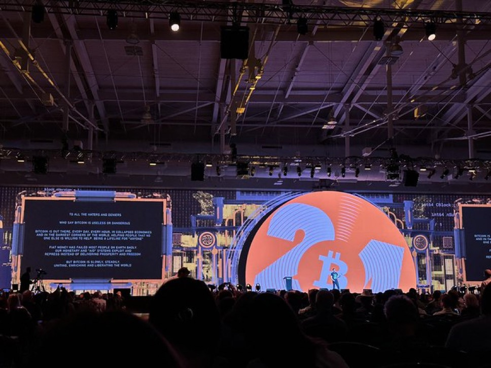

Books
Author of A Trojan Horse for Freedom, Hidden Repression, and Check Your Financial Privilege.
About
Chief Strategy Officer at the Human Rights Foundation, writer and speaker on freedom technology, financial rights, and open systems.

Biography
Alex Gladstein is Chief Strategy Officer at the Human Rights Foundation and has helped shape the Oslo Freedom Forum since 2009. His work centers on connecting dissidents, civil society groups, technologists, philanthropists, and policymakers around practical tools for preserving liberty in the digital age.
He has briefed institutions including the European Parliament and US State Department, and speaks globally on censorship resistance, financial freedom, and the role of open monetary networks in protecting vulnerable communities.
Alex’s writing has appeared in outlets including TIME, WIRED, CNN, Foreign Policy, The Atlantic, and The New York Times. He is the author of Check Your Financial Privilege, Hidden Repression, and A Trojan Horse for Freedom.
Proof
Author of A Trojan Horse for Freedom, Hidden Repression, and Check Your Financial Privilege.
Published in Journal of Democracy, TIME, WIRED, Foreign Policy, and other major outlets.
Talks and briefings spanning HRF, universities, and international policy forums.
Media
Contact
npub1gladstein83sut6c6fr7tld8t23gn7309282hw5t522a62tnxjcjjzqcvx8e6